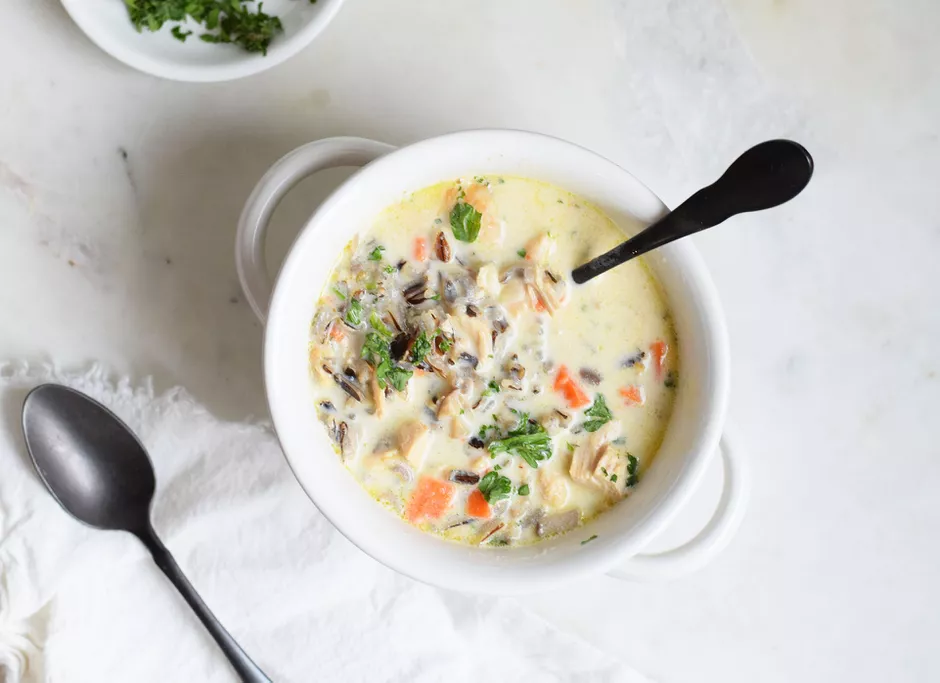

Chicken and wild rice soup is a warm and creamy, one-pot meal that will satisfy all of your cravings. All of the flavors blend together, while the rice cooks.
Ingredients
- 1 pound boneless, skinless chicken breast
- 1 teaspoon kosher salt
- 1 teaspoon freshly ground black pepper
- 1/4 cup all-purpose flour
- 2 tablespoons olive oil
- 1 small onion, diced
- 2 carrots, peeled and diced
- 8 ounces baby bella mushrooms, diced
- 4 cloves garlic, minced
- 6 cups chicken broth
- 1 teaspoon fresh sage, minced
- 1 teaspoon fresh thyme, minced
- 1 cup wild rice, uncooked
- 3/4 cup heavy cream
- 1/4 cup chopped parsley
Steps
- Gather the ingredients.
- Coat chicken breasts in salt and pepper, then cover in flour. Reserve excess flour for later.
- Heat olive oil in a large pot or Dutch oven that can contain entire soup (about 8 cups). Add chicken to pot and cook for 2 minutes per side or until golden brown. Chicken will not be cooked through. Remove chicken from pot, leaving oil behind.
- Add diced onions and carrots. Sauté for 2 to 4 minutes over medium heat or until vegetables are softened.
- carrots and onions cooked in a pot
- Stir in mushrooms, minced garlic, and flour until combined. Cook for another 2 to 3 minutes over medium-low heat.
- vegetables sautéed in a pot
- Pour in chicken broth, stirring bottom of pot as you add broth to release any small bits that have stuck. Bring liquid to a boil.
- chicken broth with vegetables in a pot
- Add chicken, sage, thyme, and wild rice. Cover pot, reduce heat to low, and cook for 45 minutes or until rice is tender.
- Remove lid and take out chicken breasts. Chop or shred
- Return chicken back to pot, then stir in heavy cream. Cook for another 5 minutes over medium-low heat until soup is heated through and slightly thickened. (If you like a thicker soup you can whisk together another 1/4 cup of flour with 3 tablespoons of water, then whisk into soup until thickened.)
- Add more salt and pepper to taste and serve topped with chopped parsley.